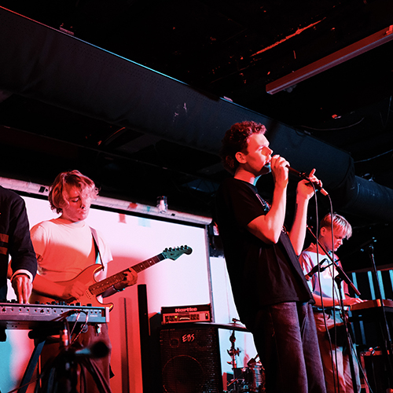

det 3 rum
Stedet hvor musik, kultur og kunst mødes.
Det 3. Rum er en del af platformen Frontløberne.
Her har fantasien ingen begrænsninger -
Det 3. Rum kan bruges til alt fra koncerter, kunstudstillinger og workshops.
Kom indenfor og oplev sydhavnens bedste musik, kunst og kultur.
